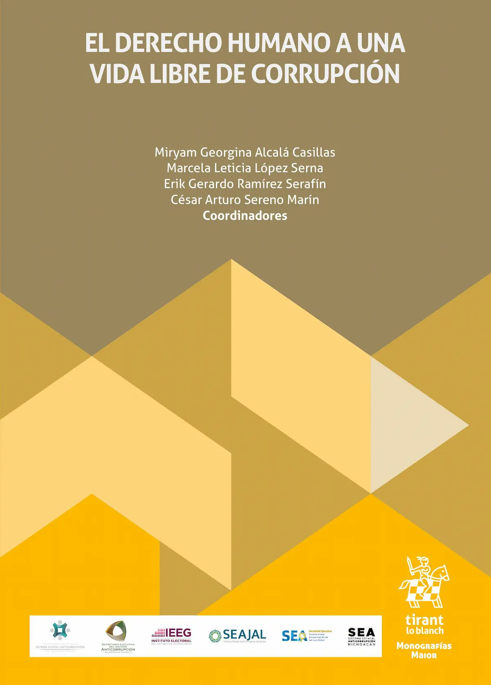
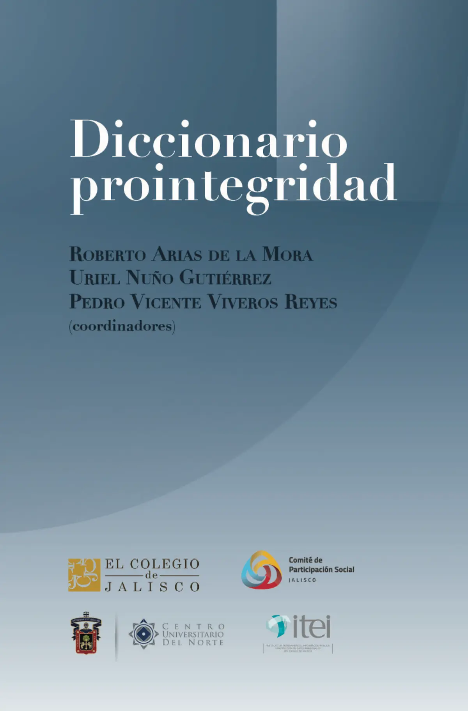
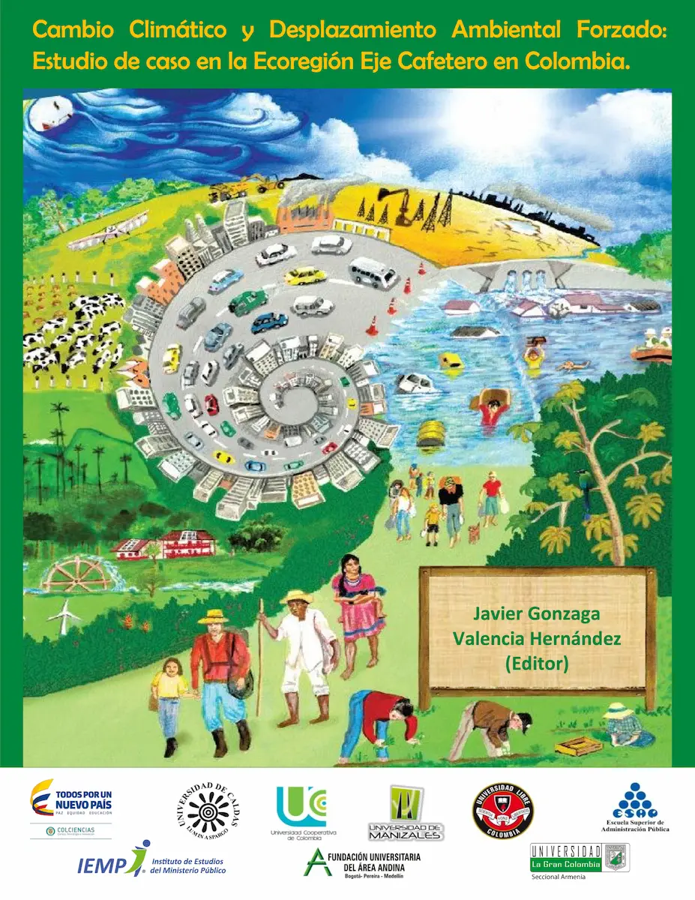
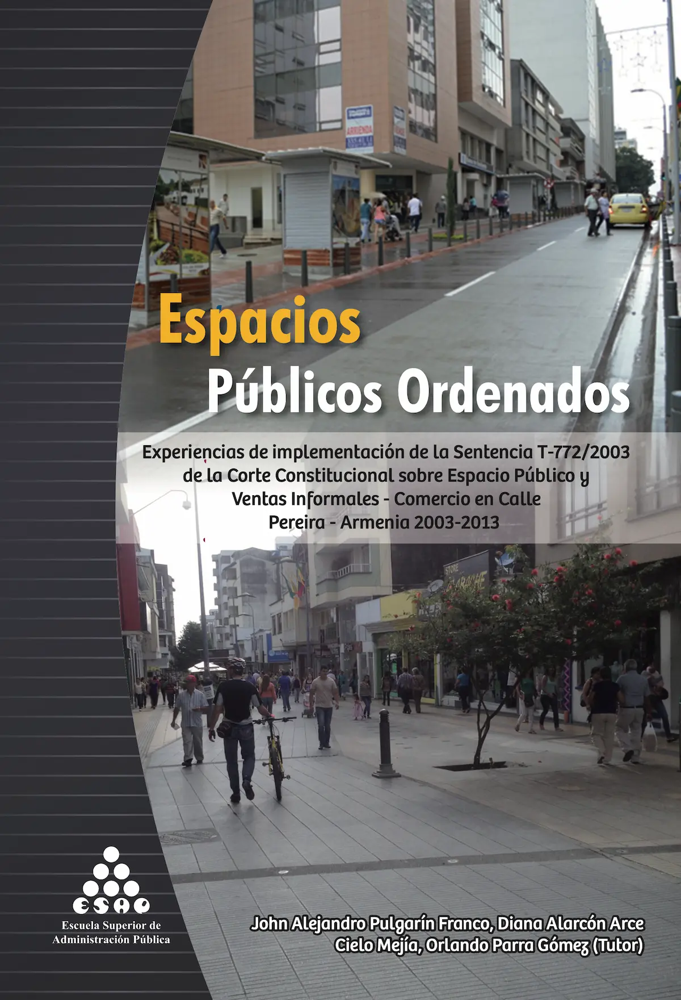
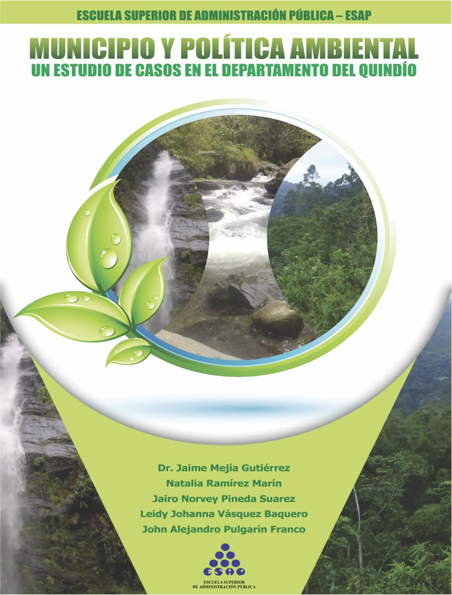

Alejandro Pulgarín-Franco
Docente, investigador y consultor

Sobre mí
Soy John Alejandro Pulgarín Franco. Ph.D., en Políticas Públicas y Desarrollo de la Universidad de Guadalajara UdG (México) becario CONACYT. Máster en Alta Dirección Pública de la Universidad Internacional Menéndez Pelayo UIMP (España) becario del programa Goberna-ESAP. Administrador público de la Escuela Superior de Administración Pública ESAP (Colombia).
He prestado mis servicios profesionales en entidades como la Corporación Autónoma Regional del Quindío CRQ, la Corporación Autónoma Regional de Risaralda CARDER, y la ESAP. Fui auxiliar de investigación en la Universidad de Guadalajara y, actualmente, soy investigador y docente de cátedra en la ESAP, además de prestar mis servicios en la Secretaría Ejecutiva del Sistema Estatal Anticorrupción de Jalisco SESAJ.
Investigo en temas relacionados con administración pública, políticas públicas (política ambiental), análisis relacional y capacidades institucionales. Fui representante del Consejo Nacional de Investigaciones de la ESAP y, en la actualidad, soy Consejero en el Consejo Estatal de Cambio Climático de Jalisco.
Soy director de Portal Público
Intereses
- Capacidades institucionales
- Políticas públicas
- Gobiernos subnacionales
- Análisis relacional
- Visualización de datos
Educación
- Ph.D. en Políticas Públicas y Desarrollo, 2022
Universidad de Guadalajara (México) - Máster en Alta Dirección Pública, 2016
Universidad Internacional Menéndez Pelayo UIMP (España) - Administrador Público, 2015
ESAP (Colombia)
Curriculum vitae
Consultar perfil en Google Scholar aquí
Consultar perfil en Researchgate aquí
Consultar perfil en ORCID aquí
Consultar perfil en LinkedIn aquí
Consultar perfil en CvLac aquí
Investigación
Artículos en revistas
Revisadas por pares
Pulgarín-Franco, J.-A. (2024). La actualización catastral y las capacidades institucionales locales: impuesto predial y servicios públicos domiciliarios. Bitácora Urbano Territorial, 34(1), 97-114. DOI: https://doi.org/10.15446/bitacora.v34n1.111741 | https://revistas.unal.edu.co/index.php/bitacora/article/view/111741
Pulgarín-Franco, J.A. (2019). Lineamientos de política pública para la gestión del agua en el municipio de Filandia-Quindío. Revista Luna Azul, (48), 23-47. DOI: https://doi.org/10.17151/luaz.2019.48.2 | http://lunazul.ucaldas.edu.co/downloads/Lunazul48_2.pdf
Pulgarín-Franco, J.A. & Mejía-Gutiérrez, J. (2017). Política pública para la gestión integral del recurso hídrico en Quindío-Risaralda 2008-2015. Gestión y Ambiente, 20(1), 38-49. DOI: https://doi.org/10.15446/ga.v20n1.61337 | https://revistas.unal.edu.co/index.php/gestin/article/view/61337
Mejía Gutiérrez, J., Pulgarín-Franco, J.A., & Moreno Rojas, H. (2016). Territorialización de la acción pública en el contexto del cambio climático en el departamento del Quindío. Administración & Desarrollo, 46(2), 235-250. DOI: https://doi.org/10.22431/25005227.81 | https://revistas.esap.edu.co/index.php/admindesarro/article/view/81
Artículos de divulgación
Gómez-Álvarez, D., y Pulgarín-Franco, J. A. (2024). La participación ciudadana en el fortalecimiento de la integridad pública. Nodos: revista de divulgación y análisis de las buenas prácticas institucionales, (2), Contraloría del Estado Gobierno de Jalisco, 30-33. https://ce.jalisco.gob.mx/api/documents/240/NODOS-junio-noviembre-2024._Final.pdf
Pulgarín-Franco, J.A. (2013). Paisaje cultural cafetero y ecorregión eje cafetero: oportunidades para el desarrollo territorial, Revista Política y Administración, 24(), 32-38
Libros
Capítulos de libro (dictaminados)
Gómez-Álvarez, D. & Pulgarín-Franco, J. A. (2025). Avoiding the capture of local institutions: Comparative analysis of subnational legislation on special public appointments in Mexico. En F. Nieto-Morales, D. Gómez-Álvarez, y C. Pimienta (eds.), The Politics of Public Appointments in Latin America: Who Holds the Keys? (pp. ) Palgrave Macmillan Cham. (Forthcoming).
Pulgarín-Franco, J. A., & Verduzco-Chávez, B. (2025). Transferencia de política ambiental: trayectorias en la protección de los bosques y selvas. En Y. Rodríguez, J. Molina, y J. F. Puello-Socarrás (Eds.), Pasado y presente de la administración pública (Vol. 2) La administración pública en acción: Procesos y conflictos en perspectiva de las políticas públicas. Editorial ESAP. (Próximo).
Pulgarín-Franco, J. A. (2024). El ODS 15 “Vida de ecosistemas terrestres”: propuesta para medirlo a escala subnacional y no fracasar en el intento. En M. Berger e I. Salas-Durazo (Coords.), Objetivos de Desarrollo Sostenible: experiencias desde lo local. Tlajomulco en el contexto del Área Metropolitana de Guadalajara – Tomo II. Cuidado del medio ambiente. Editorial Universidad de Guadalajara (Próximo).
Tinajero-Díaz, G. & Pulgarín-Franco, J. A. (2024). Hacia la construcción de instituciones fuertes: el ODS 16 en el municipio de Tlajomulco de Zúñiga y el Área Metropolitana de Guadalajara. En M. Berger e I. Salas-Durazo (Coords.), Objetivos de Desarrollo Sostenible: experiencias desde lo local. Tlajomulco en el contexto del Área Metropolitana de Guadalajara – Tomo IV. Gobernanza de la ciudad. Editorial Universidad de Guadalajara (Próximo).
Gómez-Álvarez, D. & Pulgarín-Franco, J. A. (2024). Las designaciones públicas en Jalisco y sus municipios: hacia designaciones abiertas. En M. Alcalá, M. López, M., E. Ramírez & C. Sereno (Coords.), El derecho humano a una vida libre de corrupción (pp. 467-483). Editorial Tirant Lo Blanch.
Díaz, C., Mejía, J., Mejía, H., & Pulgarín-Franco, J.A. (2014) El estado y su responsabilidad frente al fenómeno del desplazamiento ambiental desde la perspectiva de los derechos humanos. En J. Gonzaga (Ed.), Cambio climático y desplazamiento ambiental forzado: estudio de caso en la ecoregión eje cafetero en Colombia (pp. 127-153) Editorial Universitaria, Universidad La Gran Colombia.
Coautoría
Arias, R., Nuño, U., y Viveros, P. (2024). Diccionario prointegridad. El Colegio de Jalisco. (Co-autor). https://coljal.mx/wp-content/uploads/2024/12/Diccionario-prointegridad-vf.pdf
Valencia Hernández, J. (ed). (2014). Cambio climático y desplazamiento ambiental forzado: estudio de caso en la ecoregión eje cafetero en Colombia. Editorial Universitaria, Universidad La Gran Colombia. (Co-autor). https://www.ugc.edu.co/sede/armenia/files/editorial/cambio_climatico_desplazamiento_ambiental.pdf
Mejía, J., et al. (2014). Municipio y Política Ambiental: un estudio de casos en el departamento del Quindío. ESAP. (Co-autor).
Parra, O. et al. (2014). Espacios Públicos Ordenados: experiencias de implementación de la Sentencia T-772 de 2003 de la Corte Constitucional. ESAP. (Co-autor). https://repositoriocdim.esap.edu.co/handle/20.500.14471/28714
    Docencia
En esta página se encuentra la información relacionada con mi actividad docente